Voorkeuren
In Brand kan veel worden ingesteld. Hieronder een
opsomming van de mogelijke instellingen.
Algemeen:
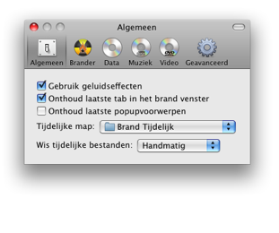
Standaard instellingen voor het gebruik met Brand. Ook
kan hier de map worden aangegeven waar de tijdelijke bestanden moeten
worden opgeslapen en wanneer deze te verwijderen.
Brander:
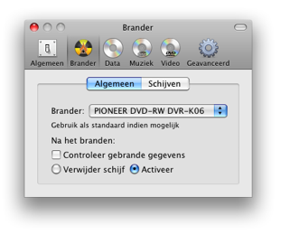
Standaard brander en instellingen na het branden.
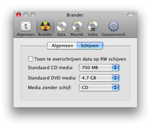
Hier kan worden aangegeven of de te overschrijven data in het hoofd
Brand venster moet worden aangegeven. Ook kan een standaard schijf
worden ingesteld als er geen schijf in de brander aanwezig is.
Data:
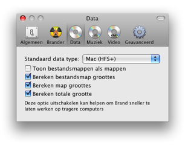
Hier kan het standaard audio formaat worden ingesteld, als Brand
de popupvoorwerpen niet onthoud. Bestandsmappen zijn mappen die zich
gedragen als mappen. Hier kan gewisseld worden hoe deze worden
weergegeven in de Data lijst. Ook kunnen de verschillende groottes wel
of niet worden berekent. Vooral de laatste optie kan Brand vertragen,
omdat het een proccesor intensieve mogelijkheid.
Muziek:
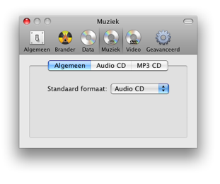
In Algemeen kan het standaard audio formaat worden
ingesteld, als Brand de popupvoorwerpen niet onthoud.
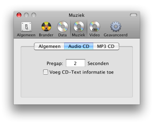
Instellingen voor een Audio-CD. Pregap is het aantal seconden voordat
een nummer begint. CD-Text kan worden toegevoegd aan een CD. Sommige
speler kunnen hierdoor informatie (zoals artiest, album etc.) opvragen.
Dit moet wel door de brander worden ondersteund.
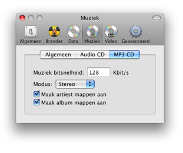
Instellingen voor een MP3 CD.
Het aantal KB per seconde. Hoe hoger hoe groter het MP3 bestand wordt,
maar des te hoger de kwaliteit van het geluid. Mono of stereo. Mono:
links en recht zijn hetzelfde. Stereo: links en
rechts zijn verschillend. Ook kan Brand automatisch mappen maken op een
MP3 CD voor artiesten of albums.
Video:
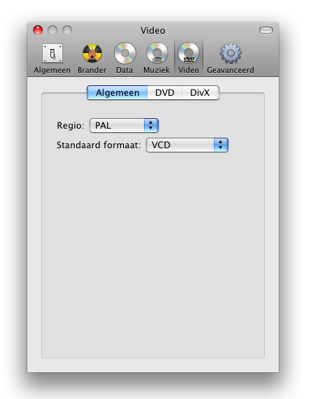
In Algemeen kan de standaard regio worden ingesteld. Ook
kan hier het standaard video formaat worden ingesteld, als Brand de
popupvoorwerpen niet onthoud.
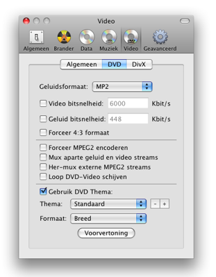
Hier kan de kwaliteit, grootte en het audioformaat worden ingesteld.
Ook zijn er een aantal geavenceerde opties voor het maken van DVD-Video
schijven. Het thema voor DVD-Video schijven kan worden ingesteld en het
formaat daarvan Normaal (4:3) of Breed (16:9).
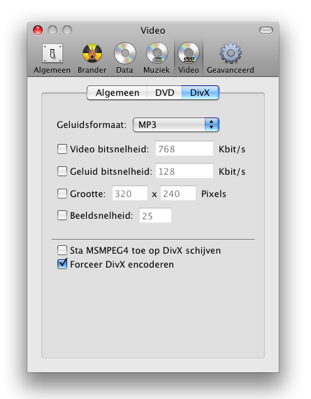
Hier kan de kwaliteit, grootte en het audioformaat worden
ingesteld. Ook kan MSMPEG4 worden toegelaten dat niet door alle DivX
spelers wordt herkent. Ook kan er voor worden gekozen om al reeds
bestaande DivX bestanden opnieuw om te zetten om zo kwaliteit, groote
aan te passen.
Geavanceerd:
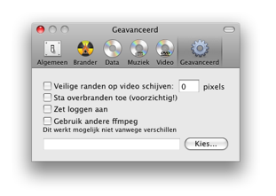
Hier kunnen veilige randen om video worden gemaakt, dit
voor apparaten die de video te veel inzoomen. Deze optie is nog niet
volledig uitgewerkt en houd geen rekening met verhoudingen. Brand
controlleert standaard of de data op een schijf past. Door overbranden
toe te staan zal dit niet meer gebeuren. Wees daarom voorzichtig met de
hoeveelheid data die gebrand wordt met deze optie aan, aangezien dit
officieel niet wordt ondersteund en het de vraag is of de brander er
juist op reageert. Ook kan het loggen aangezet worden, dit is vooral
handig als een probleem zich voordoet met Brand. Brand gebruikt ffmpeg
voor het omzetten van audio en video bestanden, hier kan een
alternatieve versie worden gekozen. Bijvoorbeeld een versie die meer
codecs ondersteund. Alleen is het de vraag of deze ook werkt in
samenwerking met Brand, omdat Brand op een bepaalde manier er mee
communiceerd.